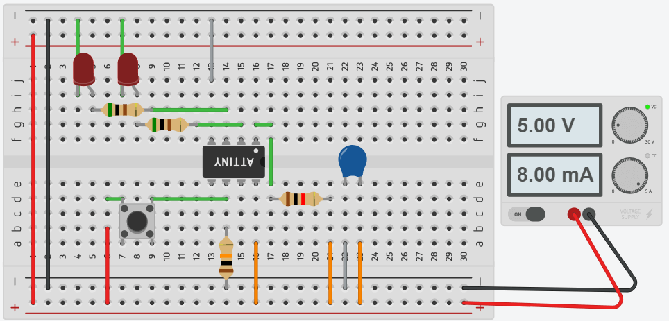
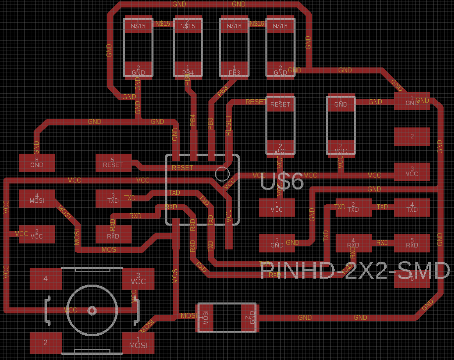
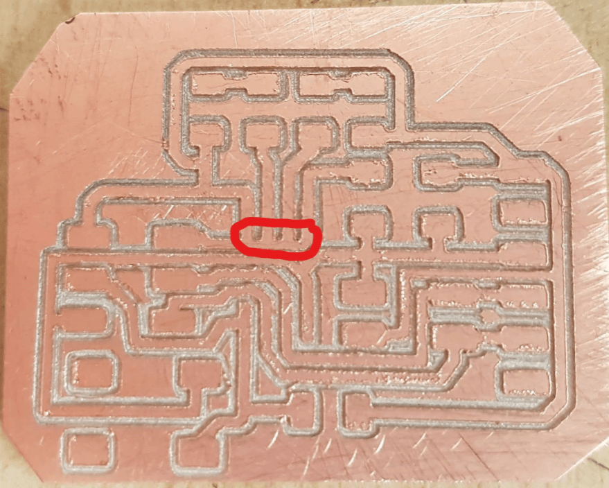

Wildweek - Composites
- Group: Test runout, alignment, speeds, feeds, and toolpaths for your machine
- Individual assignment: Measure something. Add a sensor to a microcontroller board that you have designed and read it.
Testing - Glass Fiber
Made two tests. My first coupon was just adding 2 little patchs of material together with resin (general use resin), and my second test was using a plastic mold to check how material adapts to circular forms. In both cases, first apllied a layer of resin and, when still wet, added one layer of fiber. Repeated the process for next layers. When all layers where together, used a roller for flattening and air bubble release.
I been working in my house, using gloves, glasses and a overall. Since the beginning, noticed the fiber gets everywhere so its important to do little cleaning for time to time Even wearing mask, security glasses and overall I got material in my troath. I think it happened when took out my mask and some fibers may be floating Working with the fiber isn't hard, but need to be really organized to avoid having fiber all over the place.
After one night, I got both test looking good.

Testing - Natural Fiber
For this work, I used Jute. Bought it from a general cloth store.
Using a piece of glass as mold, I started to adding layers of natural fiber to it, using same resin. When all layers where added, used a roller to make it flat, make air bubbles to release and push extra resin out.
Put some weight on top of coupon for make it compact and push more resin out. Left overnight.
Final result is a succed.
Mask Design
I wanted to do a mask for this assignment, so I used a balloon and newsprint paper to make the base.
With a solution of water and glue, applied it on the ballon. Then, added pieces of paper, next a new layer of solution, to make the first layer stick better to the ballon. All other layers were a repetition. 5 layers later, left the ballon to dry with air fromn the window.
5 layers later, left the ballon to dry.

I think used too much solution. It took 2 days with cold weather to dry completely.
Adding composite
After the ballon dried, cut the fiberglass mat in small pieces for maximum adapt to the baloon shape. Then, after setting my workspace, started to add resin to the mask and the glass fiber.
Added 2 layers of fiberglass while pressing it with a small roller, then left to dry when all air is out. While drying, cleaned my workspace to avoid other people inhalate the glass fiber.

Result
When all dry, the mask is really solid. Even when not using a pressure technique, glass fiber hardens really nice. Could not cut the other eye. Its too hard to let the cutter through.
Tried to cut the eyehole when still wet because if left to harden more, would be impossible. So cut one eyehole and left the other one for testing cutting while hard.
Will do another mask with natural fiber. Working with fiberglass in my house feels kind of dangerous to my family. Even cleaning and taking lots of care, some fibers float and keep that way, being dangerous to the kids here.

Extra try!
I did a second mask, now using natural fiber. Repetead the same steps from glass fiber, but this time I put it on a vaccum bag and left it on the sun.
Jute it's too thick to properly get mask shape, resulting a very bulky mask. Good part is, it's safe to machining.
When using vacumm bag, some resin was left on the mask with very spikey shape. It's important to handle it with gloves.